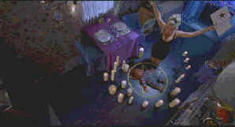

| Bride
of Chucky(SE)/C,A |
| Universal/1998/89m/ANA
1.85 |
Chucky is a thoroughly disgusting horror character, a
twisted vision of a child’s doll come to life with a mouth as foul as anything William Peter
Blatty thought up for Megan to say in The Exorcist. The fourth in a series of films that
began with Child's Play, The Bride of Chucky capitalizes on the garish humor that is
inherent in the Chucky series. This time out the filmmakers have emphasized the humor in
situations. It is a strange combination considering the amount of blood pouring over the screen,
but there are a lot of good lines. I would have liked more live Jennifer Tilly. She’s a gifted
comedienne and while her voice is a hoot, she’s a joyous presence on screen for members of the
lascivious club.
 |
|
Who do this voodoo?©Universal |
In Chucky's last screen appearance as a
serial killer he was wasted pretty seriously. Sequels have little trouble resurrecting their
assets. A little voodoo by a vamping Jennifer Tilly and the poor little Chucky doll comes back to
life sporting some stitch work inspired by Frankenstein. Tilly, the girlfriend of the diceased
serial killer wants him back in the flesh and the only way she can do that is to bring the Chucky
doll to life and transform him to flesh and blood. Chucky has other ideas and Tilly little plan
backfires nicely. Which means Chucky gets his own little dolly to fornicate with. It all doesn't
really matter since it's just an excuse to get Chucky back in the game. And the game is murder and
mayhem.
How much fun is The Bride of Chucky? It's certainly going for the
laughs but the nasty nature of the concept gets in its own way. Perhaps there's a bit too much
blood and an excess of puppetry.
The Bride of Chucky is chuck full of special edition goodies. There's an audio commentary
from director Ronnie Yu on one track and another with Jennifer Tilly, Brad Dourif and Don Mancini
on another. You have to access the commentaries from the "Language Selection" of the main
menu and then select "Spoken Languages." Jennifer Tilly's diary about her Chucky
experience is an additional treat. Tilly’s diary is very funny. Think of it like that little
extra appetizer they give you at fancy restaurants these days. There's also a nice "Spotlight
on Location" short chronicling the making of The Bride of Chucky. Using a computer DVD
ROM drive you can access the individual pages of Jennifer’s diary as jpg files and print them or
admire the originality of the prose.
The DVD is transferred with great expertise. Colors are saturated and
tightly controlled. Detail is very sharp in the anamorphic transfer with no unsightly edge
artifacts resulting. The picture packs maximum punch with night scenes brightly lit. Darker scenes
have excellent shadow detail. The Dolby Digital 5:1 surround sound is aggressive creating an
additional layer of delight for Chucky's shenanigans.
|
|

Selections from the feature archive include articles on Akira Kurosawa,
Frank Darabont, Blonde Bimbos, Hollywood
Street Gangs, or Vietnam:
The Hollywood Pariah, and many more....
Sturges
Emerges
Preston Sturges was Hollywood's resident comic genius for more than a decade. His movies are
timeless. Click on his image to read all about it.

Movie Rage: Death in the Aisles
Everyone knows what it feels like to get angry at the movies these
days. Here's a humorous but not so delightful view of big screen misery.
 . .
The
Movie Poster Archive includes extensive poster images from the films of stars like Susan Hayward,
Kirk Douglas, Katharine Hepburn and many more. Our featured star is John Wayne
|